17 de octubre de 2026
La Tragedia del Rey Lear
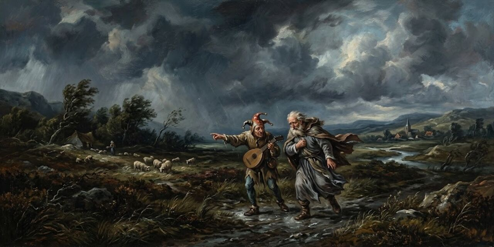
William Shakespeare
Hacia 1605-1606, William Shakespeare escribió King Lear, una de sus grandes tragedias: un rey viejo, cansado de gobernar, reparte su reino entre sus tres hijas según el amor que cada una diga tenerle, y deshereda a la menor, la única que se niega a mentir.
Acto I, escena 1
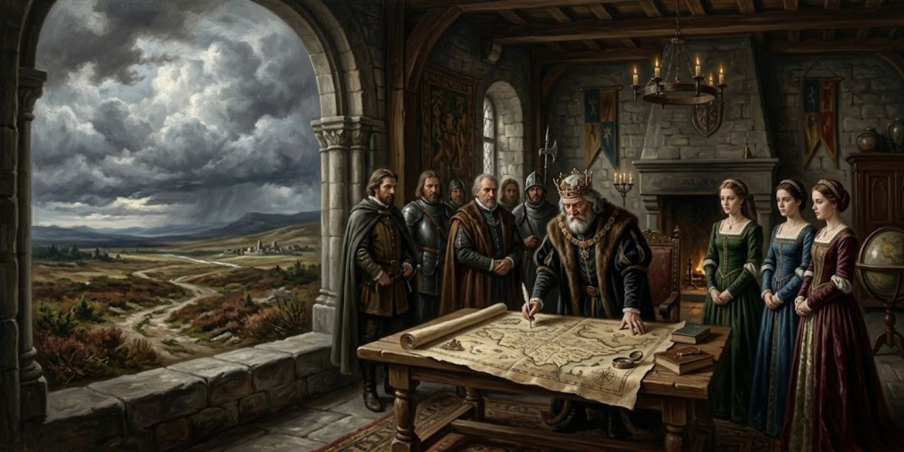
La primera frase de la obra es de Kent: al rey lo vieron siempre más inclinado a un yerno que al otro. Entra Lear, viejo y cansado de gobernar, pide el mapa y anuncia su plan.
Meantime we shall express our darker purpose.
Entre tanto, expresaremos nuestro más oscuro designio.
Lear
El plan es un concurso: cada hija dirá cuánto lo ama y la que más lo quiera se llevará la mejor parte. Goneril, la mayor, habla primero.
Sir, I love you more than word can wield the matter, Dearer than eyesight, space, and liberty, Beyond what can be valued, rich or rare, No less than life, with grace, health, beauty, honor; As much as child e’er loved, or father found; A love that makes breath poor, and speech unable.
Señor, os amo más de lo que la palabra puede expresar, más que a la vista, al espacio y a la libertad; más allá de todo lo que pueda valorarse, rico o raro; no menos que a la vida, con gracia, salud, belleza y honor; tanto como jamás hija amó o padre halló; un amor que deja pobre al aliento y sin fuerza al habla.
Goneril
Regan la sigue con la misma música. Cordelia, la menor y la más querida, se niega a jugar: «nada, mi señor». Presionada, lo ama según su deber, ni más ni menos. Ella insiste:
Good my lord, You have begot me, bred me, loved me.
Mi buen señor, vos me engendrasteis, me criasteis, me amasteis.
Cordelia
Ella devuelve deber por deber. Lear, ciego de ira, la deshereda. Kent, el consejero más leal, se interpone:
To plainness honor’s bound When majesty falls to folly.
A la franqueza está el honor obligado cuando la majestad cae en la locura.
Kent
La franqueza le cuesta a Kent el destierro. Lear ofrece a Cordelia, ya sin dote, a Borgoña; ella confiesa que le falta el arte meloso de declarar lo que no siente, y su padre la despide con una maldición:
Better thou Hadst not been born than not t’ have pleased me better.
Mejor fuera que no hubieras nacido a no haberme complacido mejor.
Lear
Borgoña se retira; Francia la acepta tal como es y se la lleva. A solas, las hermanas se quitan la máscara: su padre apenas se conoce y seguirá dando problemas. Goneril cierra la escena:
We must do something, and i’ th’ heat.
Debemos hacer algo, y en caliente.
Goneril
Acto I, escena 2

Edmund, hijo bastardo de Gloucester, habla a solas: su diosa es la Naturaleza («Thou, Nature, art my goddess») y no acepta la costumbre que lo condena por bastardo:
Wherefore should I Stand in the plague of custom, and permit The curiosity of nations to deprive me For that I am some twelve or fourteen moonshines Lag of a brother?
¿Por qué habría de quedar bajo la plaga de la costumbre y permitir que la curiosidad de las naciones me prive por ser yo unas doce o catorce lunas más joven que un hermano?
Edmund
Con una carta falsificada hace creer a su padre que Edgar, el hermano legítimo, planea matarlo. Gloucester reconoce la letra; Edmund hunde el cuchillo con cuidado:
It is his hand, my lord, but I hope his heart is not in the contents.
Es su mano, mi señor, pero espero que su corazón no esté en el contenido.
Edmund
Gloucester traga el anzuelo: manda buscar a Edgar y culpa a los eclipses de todo lo que se rompe en el mundo:
Love cools, friendship falls off, brothers divide; in cities, mutinies; in countries, discord; in palaces, treason; and the bond cracked ’twixt son and father.
El amor se enfría, la amistad decae, los hermanos se dividen; en las ciudades, motines; en los países, discordia; en los palacios, traición; y el vínculo agrietado entre hijo y padre.
Gloucester
Solo, Edmund se burla del padre crédulo. Ve llegar a Edgar y se ajusta la máscara:
My cue is villainous melancholy, with a sigh like Tom o’ Bedlam.
Mi pie es una melancolía de villano, con un suspiro como el de Tom el de Bedlam.
Edmund
Su «pie», su entrada en escena; Tom el de Bedlam, un loco de manicomio. Le hace creer a Edgar que su padre lo odia, y el hermano noble le cree. Solo, celebra el engaño y cierra la escena: le vale todo lo que pueda ajustar a su plan.
Acto I, escena 3
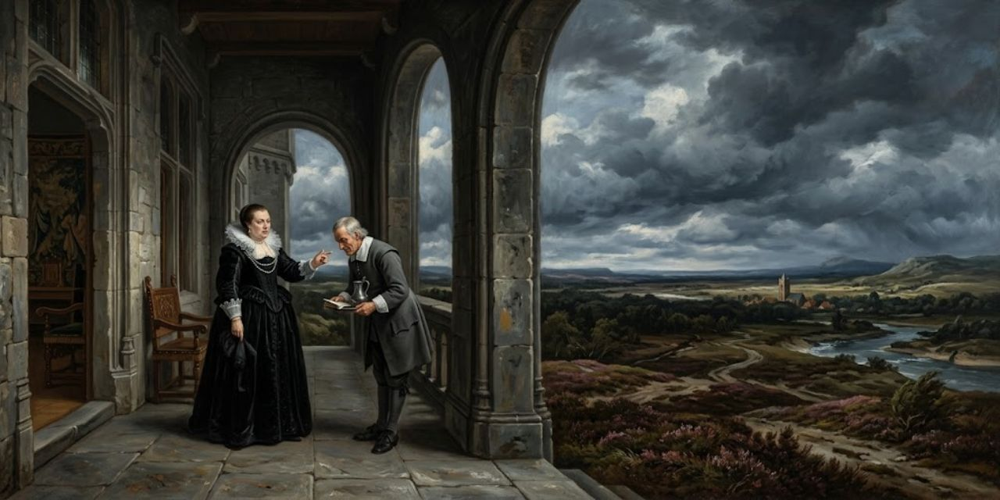
En casa de Goneril, la hija mayor. Su mayordomo, Oswald, confirma la noticia: el rey golpeó a un caballero de ella por reprender a su Bufón. La queja lleva tiempo creciendo: a cada hora el viejo estalla en una grosería que los pone a todos en contra. Goneril lo decide en voz alta:
I’ll not endure it.
No lo soportaré.
Goneril
El plan es enfriar el servicio: cuando el rey vuelva de caza, ella dirá estar enferma, y los criados atenderán con una negligencia cansada que saque el pleito a la cara. Si al rey le sienta mal, que se vaya con su hermana, que piensa lo mismo. Y se explica:
Idle old man That still would manage those authorities That he hath given away.
Viejo ocioso que aún querría manejar esas autoridades que ha cedido.
Goneril
Que los caballeros reciban miradas más frías; no importa lo que salga: quiere criar ocasiones para hablar. Escribe enseguida a Regan para que sostenga el mismo curso, y vuelve a la casa con dos palabras: «Preparen la cena».
Acto I, escena 4
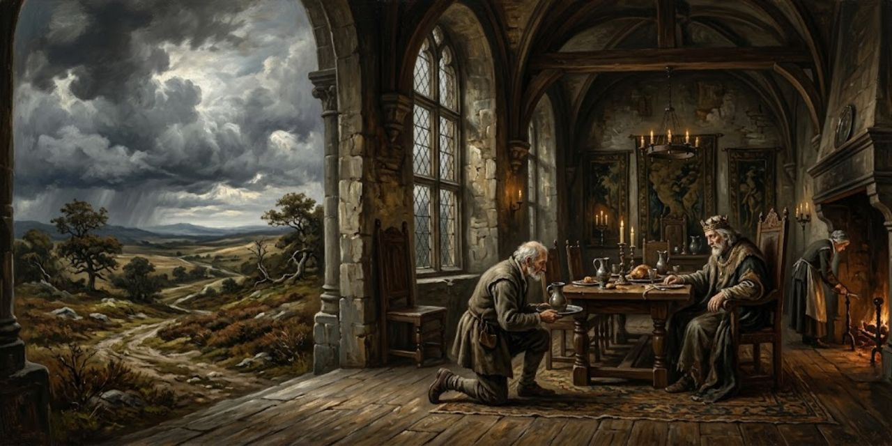
Kent, el consejero desterrado, vuelve disfrazado: se cambia el acento y la cara para servir al rey que lo condenó. Lear llega a casa de Goneril pidiendo la cena y lo ve. «¿Qué profesas?», le pregunta. Ser lo que parezco, responde Kent: servir al que me dé su confianza, conversar con el sabio que habla poco y pelear cuando no quede otro remedio. Y añade que es un hombre honrado, tan pobre como el rey. Lear, en broma, le da la razón:
If thou be’st as poor for a subject as he’s for a king, thou art poor enough.
Si eres tan pobre como súbdito como él lo es como rey, eres bastante pobre.
Lear
La broma le basta: lo toma a su servicio si no le cae peor después de la cena. Pasa Oswald sin saludar; Lear lo hace volver: «¿Quién soy yo, señor?». «El padre de mi señora», responde el criado. Lear lo golpea y Kent lo derriba de una zancadilla: le enseña las diferencias.
Llega el Bufón, mustio desde que Cordelia partió a Francia. Le ofrece a Kent su gorra de cascabeles por seguir a un amo caído en desgracia, y le canta a Lear la cuenta de sus tierras: nada de nada. «¿Me llamas loco, muchacho?», pregunta el rey. La respuesta:
All thy other titles thou hast given away.
Todos tus otros títulos los has regalado.
Bufón
Ese título, remata el Bufón, es el único que nació con él; y sigue con la cuenta: el rey partió su corona por la mitad y regaló las dos partes, así que le quedó poco seso bajo la calva. Entra Goneril, ceñuda, con una queja larga y bien ordenada: los cien caballeros de Lear hacen de su palacio una taberna; pide que «reduzca el séquito» a hombres de su edad, que se conozcan a sí mismos y lo conozcan a él. Lear estalla:
Degenerate bastard, I’ll not trouble thee.
Bastardo degenerado, no te molestaré más.
Lear
«Aún me queda una hija», se consuela. Llega Albany, el esposo de Goneril, y jura que es tan inocente como ignorante de lo que pasó. Lear oye sus propias lágrimas y se avergüenza; entonces alza la voz a la Naturaleza y pide que seque el vientre de Goneril: si ha de tener un hijo, que sea una tormenta torcida que la atormente, para que aprenda cuánto hiere más que el diente de una serpiente un hijo desagradecido. Y la maldición sigue subiendo:
Th’ untented woundings of a father’s curse Pierce every sense about thee!
¡Que las heridas sin cura de la maldición de un padre te traspasen todos los sentidos!
Lear
Sale hacia Regan, seguro de que su otra hija, al saberlo, le arañará con las uñas la cara de loba a su hermana, y jurando que retomará la forma que creen que ha dejado para siempre. El Bufón lo sigue. Goneril, ya a solas con su esposo, defiende su prudencia con una sonrisa torcida:
’Tis politic and safe to let him keep At point a hundred knights!
¡Es prudente y seguro dejarle mantener a punto cien caballeros!
Goneril
Es sarcasmo: con cien hombres armados a punto, cada sueño del viejo puede poner en riesgo sus vidas. Ya tiene escrita la carta a Regan y manda a Oswald con ella, con orden de añadir sus propias razones. Albany se queda con la duda; lo único que alcanza a decir es que «el desenlace dirá».
Acto I, escena 5
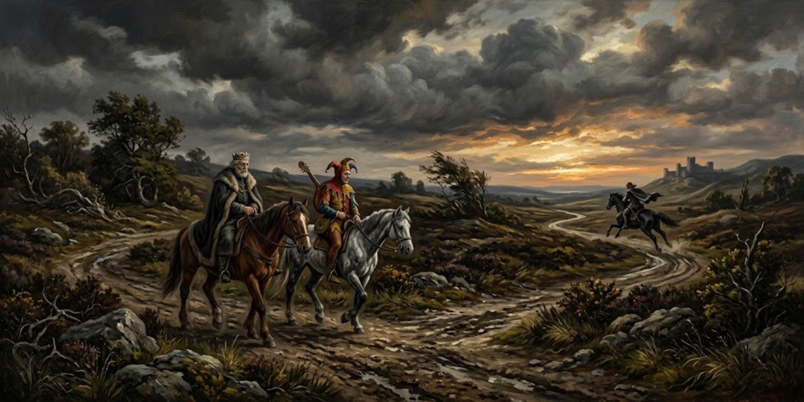
Camino de Regan. Lear envía a Kent por delante con cartas: «Ve delante a Gloucester con estas cartas»; que no le cuente a su hija más de lo que le pregunten, y que vuele, o el rey llegará antes que él. En el camino, el Bufón suelta sus adivinanzas: la nariz está en medio de la cara para que los ojos vigilen lo que no se puede oler, y el caracol tiene casa para meter la cabeza, no para regalársela a sus hijas. Lear, de pronto, baja la voz: «Fui injusto con ella».
Sigue el juego: Lear acierta una adivinanza (las siete estrellas no son ocho) y el Bufón le dice que haría un buen bufón; el rey estalla contra la ingratitud, y el Bufón le devuelve el golpe con una sonrisa:
If thou wert my Fool, nuncle, I’d have thee beaten for being old before thy time.
Si fueras mi Bufón, tío, te haría azotar por ser viejo antes de tiempo.
Bufón
«Tío», lo llama: no debería haber envejecido antes de ser sabio. Lear pide al cielo, dos veces, que no lo deje enloquecer. Ya están los caballos. El Bufón cierra con una copla de doble filo: la doncella que ríe su partida no lo será por mucho, a menos que las cosas se corten más pronto.
Acto II, escena 1

Esa misma noche, en casa de Gloucester. Edmund saluda a Curan, un caballerizo, que trae rumores: Cornwall y Regan llegan esta noche, y se susurran guerras entre los duques de Cornwall y Albany, «argumentos que aún no pasan de besos al oído». Edmund, a solas, huele la ocasión: la visita se teje sola dentro de su trama. Llama a Edgar: su padre lo vigila, que huya; y le explica por qué desenvaina contra su propio hermano:
In cunning I must draw my sword upon you.
Con astucia debo desenvainar mi espada contra ti.
Edmund
«En astucia»: la pelea es teatro. Edgar huye; Edmund se corta el brazo para acreditar su propia defensa («he visto borrachos hacer más que esto en juego») y grita que ahí estuvo el villano, a oscuras, conjurando a la luna. Gloucester traga entero: manda perseguirlo y dicta su suerte:
Not in this land shall he remain uncaught, And found—dispatch.
No quedará en esta tierra sin ser capturado, y hallado—ejecutado.
Gloucester
«Y hallado, muerte»: la sentencia del padre. El retrato de Edgar correrá por todo el reino; sus tierras irán al hijo «leal y natural»: Edmund. Llegan Cornwall y Regan con trompetas. Regan ata cabos con elegancia: si Edgar andaba con los caballeros alborotosos de su padre, no es maravilla que quisiera al viejo muerto; su hermana ya la avisó: si esos caballeros llegan a su casa, ella no estará. Cornwall recluta a Edmund en el acto: naturalezas de tanta confianza harán mucha falta; desde hoy es de los suyos. Y Edmund agradece con su doble fondo:
I shall serve you, sir, Truly, however else.
Os serviré, señor, fielmente, sea lo demás como sea.
Edmund
«Lealmente, en todo lo demás no»: el villano lo dice a la cara y nadie lo oye. Regan explica la visita: su padre y su hermana escriben de diferencias, y ella prefirió responder fuera de casa; necesita el consejo de Gloucester esta misma noche. El viejo, con el corazón «quebrado», se ofrece: los sirve; sus gracias son bien venidas.
Acto II, escena 2

Ante la casa de Gloucester, de noche. «Buen amanecer te dé, amigo; ¿eres de esta casa?». Es Oswald, el mayordomo de Goneril, que llega con cartas de ella; Kent, el servidor disfrazado, llega con las del rey, y lo reconoce al instante: es el criado que insultó a Lear. ¿Dónde dejamos los caballos?, pregunta Oswald. «En el lodo». ¿Por qué me tratas así?, si ni te conozco. La respuesta:
Fellow, I know thee.
Mozo, yo sí te conozco.
Kent
Y le canta las cuarenta: bellaco, canalla, comedor de sobras, bribón de tres trajes, esclavo de un solo baúl, hijo y heredero de una perra mestiza. Desenvaina: «aunque sea de noche, luna hay». Al grito de «¡asesinato!» salen Edmund, Gloucester y los duques con Regan. Cornwall pregunta cómo creció la pendencia; Oswald, sin aliento, se pinta de víctima: perdonó la vida al viejo rufián por respeto a su barba cana. Kent no discute el cuento; le explica a Cornwall su oficio:
Sir, ’tis my occupation to be plain: I have seen better faces in my time Than stands on any shoulder that I see Before me at this instant.
Señor, es mi oficio ser llano: he visto mejores caras en mi tiempo que las que hay sobre cualquier hombro que veo ante mí en este instante.
Kent
Franqueza como oficio, y un insulto de regalo: ha visto mejores caras que todas las que hoy tiene delante. Cornwall no se lo traga: conoce a esos que, alabados por bruscos, esconden bajo la llaneza más oficio y peores fines que veinte aduladores inclinados. «Traigan el cepo». Kent avisa: sirve al rey, y castigar así a su mensajero es hacerle el agravio al rey. Gloucester intercede; Cornwall responde por él. «¿Hasta el mediodía?», pregunta Regan. «Hasta la noche, señor, y toda la noche». Kent lo intenta una última vez:
Why, madam, if I were your father’s dog, You should not use me so.
Vamos, señora, si yo fuera el perro de vuestro padre, no me trataríais así.
Kent
«Por eso, por ser su criado», responde Regan. Le meten las piernas en el cepo y lo dejan solo en la noche. Kent bromea con su suerte: la fortuna de un buen hombre puede andar gastada por los talones; dormirá un rato y el resto lo silbará. Pide a la luna, «faro de este mundo de abajo», luz para leer una carta que le llega: es de Cordelia, que ya sabe de su rumbo escondido y sabrá poner remedio a tantas pérdidas. «Casi nada ve milagros sino la miseria». Y se duerme con un encargo: «Fortuna, buenas noches; sonríe una vez más, y gira la rueda».
Acto II, escena 3
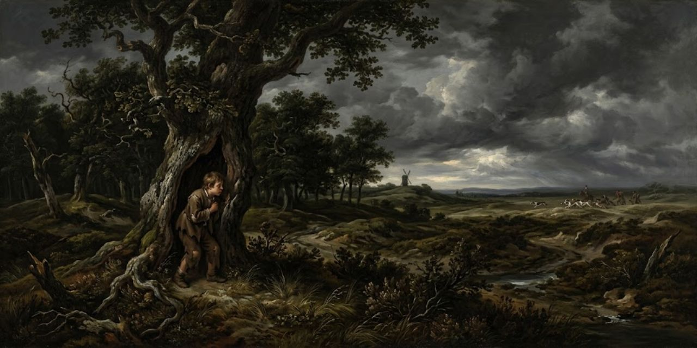
Edgar, solo, cuenta su suerte: proscrito por la voz de su propio padre, se salvó de la cacería en el hueco dichoso de un árbol; ningún puerto está libre de guardias y vigilias. Su decisión:
Whiles I may ’scape, I will preserve myself, and am bethought To take the basest and most poorest shape That ever penury in contempt of man Brought near to beast.
Mientras pueda escapar, me preservaré, y estoy decidido a tomar la forma más baja y más pobre que jamás la penuria, en desprecio del hombre, acercara a la bestia.
Edgar
La forma más baja y más pobre que la miseria acercó jamás a la bestia: se tiznará la cara con mugre, ceñirá sus lomos con una manta, se enredará el pelo en nudos de duende y, casi desnudo, desafiará los vientos y las persecuciones del cielo. El país le da el modelo: los mendigos de Bedlam, que con voz de bramido se clavan alfileres, clavos y ramas de romero en los brazos entumecidos, y con ese objeto horrible fuerzan la caridad de granjas, aldeas y molinos. «¡Pobre Turlygod! ¡Pobre Tom!». Eso es algo todavía. Y se borra del mundo: «Edgar ya no soy nada».
Acto II, escena 4

Lear llega a la casa de Gloucester con el Bufón y encuentra lo que no puede creer: su mensajero, Kent, sentado en el cepo como un ladrón común. «¿Haces de esta vergüenza tu pasatiempo?». No, mi señor. El Bufón cuenta las ligas: los caballos se atan por la cabeza, los perros y los osos por el cuello, los monos por los lomos y los hombres por las piernas. ¿Quién te puso aquí? «Tu hijo y tu hija». No. Sí. Que no, por Júpiter. Que sí, por Juno. Lear lo nombra:
’Tis worse than murder To do upon respect such violent outrage.
Es peor que el asesinato cometer sobre el respeto tan violento ultraje.
Lear
Kent cuenta: apenas entregadas las cartas del rey, llegó un poste sudado con las de Goneril; leyeron primero las de ella, montaron y salieron, y a él, por sacar la espada contra el otro mensajero, lo pagaron así. El Bufón canta su copla de invierno: los padres con bolsas verán hijas amables; el que sirve por ganancia empacará cuando empiece a llover, pero el Bufón se quedará. Lear pide hablar con los duques. Responden que están enfermos, cansados del viaje: «meros rodeos, figuras de la rebelión y la deserción». Gloucester sale con excusas del «carácter ardiente» del duque, y el rey se contiene a golpes: «oh, mi corazón, mi corazón que sube: ¡abajo!». Por fin salen Cornwall y Regan.
Regan lo recibe con paciencia de manual: su hermana no puede haber faltado a su obligación; si frenó los alborotos del séquito, lo hizo con un fin sano que la libra de toda culpa. Y le suelta la verdad fría:
O sir, you are old.
¡Oh señor, sois viejo!
Regan
Está al borde mismo de su confín, sigue Regan: necesita que lo gobierne una discreción que vea su estado mejor que él mismo. Que vuelva con su hermana y le diga que la ha agraviado. «¿Pedirle perdón?». Y Lear monta la mueca de la escena: «Querida hija, confieso que soy viejo; la vejez sobra; de rodillas te pido vestido, cama y comida». Regan corta: basta de trucos feos. Lear maldice a Goneril con el aire que lleva, con los relámpagos, con las nieblas chupadas de pantano que caen a ampollar. Regan tiembla de que le toque a ella; Lear jura que no: su naturaleza es tierna, sus ojos consuelan y no queman, y no ha olvidado su mitad del reino. Regan responde con cuatro palabras:
Good sir, to th’ purpose.
Buen señor, al grano.
Regan
«Al propósito»: cuatro palabras de hielo; entre ellas y los dioses a los que Lear grita se mide toda la escena. Vuelve la pregunta enterrada: ¿quién metió a mi hombre en el cepo? Suena una trompeta: es Goneril, que llega. Lear mira las dos manos tomadas y aprieta los costados: «¿No te da vergüenza mirar esta barba?». Cornwall confiesa lo del cepo: lo puso él, y los desórdenes del criado merecían menos honor. Regan ofrece sus términos: que vuelva con la hermana un mes y despida a la mitad del séquito. Lear renuncia antes a todos los techos: compañero del lobo y del búho, de la necesidad que pellizca. Y a Goneril, que le dice «a su elección, señor», le suplica:
I prithee, daughter, do not make me mad.
Te ruego, hija, no me hagas enloquecer.
Lear
No volverán a verse, le dice; ella es su carne, o mejor una enfermedad de su carne, un divieso en su sangre podrida; pero no la regañará: que la vergüenza venga cuando quiera. Puede ser paciente; se quedará con Regan, él y sus cien caballeros. Entonces empieza la subasta: Regan no está lista para recibirlo; ¿cincuenta seguidores?, ¿para qué tantos?; traiga veinticinco, y a ninguno más dará lugar. Lear prefiere a Goneril: su cincuenta dobla el amor de Regan. Goneril baja la apuesta: ¿para qué veinticinco, o diez, o cinco? «¿Para qué uno?», remata Regan. Y ahí Lear responde con la pregunta de la obra: que no razonen la necesidad; hasta el mendigo más bajo tiene algo que le sobra; si la naturaleza no tiene más de lo que necesita, la vida del hombre vale lo que la de la bestia. Y se muestra a los dioses:
You see me here, you gods, a poor old man As full of grief as age, wretched in both.
Me veis aquí, dioses, un pobre viejo tan lleno de pena como de edad, desdichado en ambas.
Lear
Si son ustedes, dioses, los que revuelven estos corazones contra su padre, no me hagan tan tonto como para aguantarlo manso: tóquenme con ira noble y no dejen que las armas de las mujeres, las gotas de agua, manchen estas mejillas de hombre. A ustedes, brujas contra natura, les haré tales venganzas que serán los terrores de la tierra; cuáles son, todavía no lo sé. ¿Creen que lloraré? No lloraré: tengo plena causa, pero este corazón se romperá en cien mil pedazos antes de que yo llore. «Oh, Bufón, me volveré loco». Sale a la noche. Gloucester vuelve con la noticia: el rey está en gran furia y pide los caballos, nadie sabe a dónde. «Es mejor dejarlo pasar», dice Cornwall; «él mismo se guía». Regan y Goneril se lavan las manos: a los hombres obstinados, las injurias que ellos mismos se procuran les sirven de maestras; la casa es pequeña; que cierren las puertas. Y Cornwall cierra la escena con la orden que abre la tormenta: «Cierren las puertas, mi señor; es una noche salvaje. Entra, sal de la tormenta».
Acto III, escena 1

En el páramo, en plena tormenta. Kent encuentra a un caballero del séquito: ¿quién hay ahí, además del mal tiempo? Uno de humor parecido al tiempo. ¿Dónde está el rey? Peleando con los elementos airados: manda al viento soplar la tierra hasta el mar, se arranca los pelos blancos, corre sin sombrero en la noche en que hasta el oso y el lobo guardan el pelo seco; y no lo acompaña nadie sino el Bufón, que se afana por ganar con bromas a las injurias que le traspasan el corazón.
Kent se fía de él: hay división entre Albany y Cornwall, y algo peor; criados que parecen otra cosa espían para Francia, y una fuerza francesa ya tiene pies secretos en los mejores puertos. Que corra a Dover con el encargo y hallará quien se lo agradezca; si ve a Cordelia, que le muestre este anillo y ella le dirá quién es este mozo que aún no conoce. El caballero le da la mano: «¿no tiene más que decir?». Y Kent cierra la escena:
Few words, but, to effect, more than all yet: That when we have found the King—in which your pain That way, I’ll this—he that first lights on him Holla the other.
Pocas palabras, pero, en efecto, más que todo hasta ahora: que cuando hayamos hallado al Rey—en lo cual vos os afanaréis por allá, yo por acá—el que primero dé con él grite al otro.
Kent
Acto III, escena 2

En el páramo, bajo la tormenta entera. Lear no se resguarda: le habla al tiempo como a un ejército. «¡Soplen, vientos, y rómpanse las mejillas! ¡Cataratas y huracanes, chorreen hasta ahogar las torres! ¡Fuegos sulfurosos que ejecutan el pensamiento, chamusquen mi cabeza blanca! ¡Trueno que lo sacudes todo, aplana la redondez del mundo, rompe los moldes de la natura y derrama de una vez los gérmenes del hombre ingrato!». El Bufón tira de él: el agua bendita de la corte bajo techo vale más que esta agua de fuera; entra, tío; pide la bendición de tus hijas; esta noche no tiene piedad ni de sabios ni de locos.
Lear no entra: disculpa a los elementos (no les dio reino ni los llamó hijos; no le deben nada, así que que caiga su horrible placer) y se presenta ante ellos:
Here I stand your slave, A poor, infirm, weak, and despised old man.
Aquí estoy, esclavo vuestro, un pobre viejo enfermo, débil y despreciado.
Lear
Esclavo de los vientos, sí, pero ministros serviles, les grita, que juntan sus batallas con dos hijas perniciosas contra una cabeza vieja y blanca. Kent lo encuentra por fin: «¿estáis aquí?». Las cosas que aman la noche no aman noches como esta; desde que es hombre no recuerda tales sábanas de fuego, tales truenos. Y Lear, de pronto, le cambia la dirección a la tormenta:
Let the great gods That keep this dreadful pudder o’er our heads Find out their enemies now.
¡Que los grandes dioses que mantienen este pavoroso estrépito sobre nuestras cabezas descubran ahora a sus enemigos!
Lear
Que los dioses encuentren ahora a sus enemigos: tiemble el miserable de crímenes no confesados, escóndase la mano sangrienta, rómpanse las culpas bien cerradas y pidan gracia a estos terribles alguaciles. Él, en cambio, es un hombre que ha recibido más pecados de los que ha cometido. Kent lo guía hacia un cobertizo cercano; el rey nota que sus sesos empiezan a dar la vuelta, y entonces, por primera vez en la obra, mira el frío de otro:
— Poor Fool and knave, I have one part in my heart That’s sorry yet for thee.
—Pobre Bufón y bribón, tengo una parte del corazón que aún se apena por ti.
Lear
El Bufón canta la canción del viento y la lluvia (el que tenga un poquito de seso que se contente con su suerte, aunque llueva todos los días), y al irse suelta una profecía en coplas: cuando los sacerdotes sean más palabra que materia, los cerveceros agüen la malta, los usureros cuenten su oro al aire libre y las rameras construyan iglesias, entonces Albión vendrá a gran confusión; «esa profecía la hará Merlín, porque yo vivo antes de su tiempo».
Acto III, escena 3

En la casa de Gloucester, el viejo abre su corazón a Edmund: no le gusta este trato contra natura; por pedir permiso para apiadarse del rey le quitaron el uso de su propia casa y le prohibieron, bajo perpetua desgracia, hasta hablar de él. Y añade lo que no debe decir: hay división entre los duques, y algo peor; esta noche recibió una carta, peligrosa de pronunciar, que guarda bajo llave; estas injurias que el rey padece serán vengadas a fondo; ya hay parte de una fuerza con pie en tierra.
Su decisión es la desobediencia:
I will look him and privily relieve him.
Lo buscaré y lo socorreré a escondidas.
Gloucester
Lo buscará y lo aliviará a escondidas; que Edmund entretenga al duque para que no se perciba su caridad; si preguntan, está enfermo en la cama; si muere por ello, que así sea: el rey, su viejo amo, tiene que ser aliviado. «Cosas extrañas se acercan, Edmund; ten cuidado». Solo, el hijo cuenta su ganancia: esta cortesía prohibida la sabrá el duque al instante, y también lo de la carta; le parece un mérito hermoso, y debe traerle lo que su padre pierde: nada menos que todo. «El joven sube cuando el viejo cae».
Acto III, escena 4
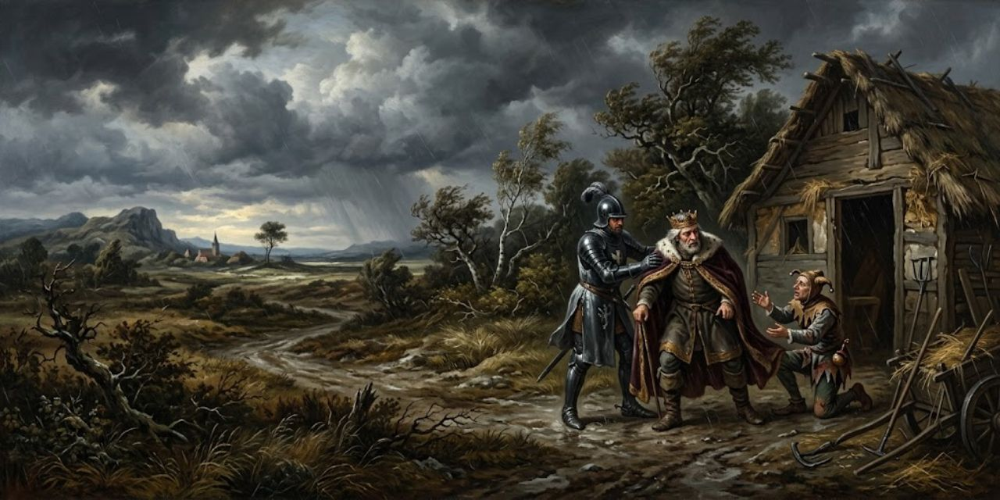
Kent consigue al fin el cobertizo: la tiranía de la noche abierta es demasiado cruda para que la naturaleza la aguante. Lear no quiere entrar; piensa en voz alta: donde la enfermedad mayor está fija, la menor apenas se siente; quien huye del oso hacia el mar bramante se lo encuentra de boca; cuando la mente está libre, el cuerpo es delicado, pero esta tempestad de la mente le quita a los sentidos todo sentir salvo lo que ahí late. La ingratitud filial: como si esta boca desgarrara esta mano por llevarle comida. En una noche así, ¿echarlo fuera? «Oh, Regan, Goneril, vuestro viejo y buen padre, cuyo corazón franco lo dio todo...». Y se frena a sí mismo:
O, that way madness lies.
Oh, por ahí yace la locura.
Lear
«Por ahí está la locura»: la evita, y entra al fin, pero primero manda entrar al Bufón («pobreza sin casa, entra tú»), y se queda a rezar. La oración de Lear es por los otros: pobres desgraciados desnudos, dondequiera que estén, que aguantan el latigazo de esta tormenta sin piedad, ¿cómo van a defender de una estación como esta sus cabezas sin casa, sus costados sin comida, sus harapos agujereados y con ventanas?
O, I have ta’en Too little care of this.
¡Oh, me he cuidado demasiado poco de esto!
Lear
«Demasiado poco me ocupé de esto»: el rey se examina, y receta: toma física, pompa; exponte a sentir lo que sienten los miserables, para sacudirles tu superfluidad y mostrar los cielos más justos. Del cobertizo sale un grito: «¡Brazada y media! ¡Pobre Tom!». El Bufón jura que es un espíritu. Es un mendigo del manicomio, medio desnudo, con el pelo en nudos y alfileres en los brazos. Lear lo mira y solo puede hacer una pregunta: «¿tú les diste todo a tus hijas?». Kent le advierte que ese hombre no tiene hijas: «¡Muerte, traidor! Nada pudo someter la naturaleza a tal bajeza sino unas hijas crueles». Y le hace al desnudo la cuenta de lo que debe: ni al gusano la seda, ni a la bestia el cuero, ni a la oveja la lana; «tú eres la cosa misma: el hombre sin préstamos no es más que ese animal pobre, desnudo y bífido que eres tú». Y empieza a desvestirse: «¡fuera, fuera, préstamos!».
Llega Gloucester con una antorcha («miren, ahí viene un fuego andante», dice el Bufón; y Tom: «el Príncipe de las Tinieblas es un caballero; Modo se llama, y Mahu»). El viejo no puede creer la compañía del rey: nuestra carne y sangre se ha vuelto tan vil que odia lo que engendra. Y desobedece en abierto:
My duty cannot suffer T’ obey in all your daughters’ hard commands.
Mi deber no puede sufrir obedecer en todo los duros mandatos de vuestras hijas.
Gloucester
Su deber no le permite cumplir esas órdenes duras: aunque le mandaron cerrar las puertas y dejar que la noche tirana se ensañara, salió a buscar al rey y lo lleva donde hay fuego y comida. Lear solo quiere hablar con «este filósofo», «este tebano docto»: ¿cuál es la causa del trueno?, ¿cuál es su estudio? («prevenir al demonio y matar alimañas»). Kent pide a Gloucester que insista: sus sesos empiezan a desasentarse. Gloucester lo sabe mejor que nadie:
Thou sayest the King grows mad; I’ll tell thee, friend, I am almost mad myself.
Dices que el Rey enloquece; te diré, amigo, que yo mismo estoy casi loco.
Gloucester
Su hijo buscó su vida hace muy poco, y lo amaba como ningún padre a un hijo: la pena le ha resquebrajado los sesos. Entran todos al cobertizo; Lear no se separa de «su filósofo», de «su buen ateniense». Y Tom se queda cantando su balada: «el niño Rowland a la torre oscura vino; su palabra era siempre: fi, fo, fum, que huelo la sangre de un hombre britano».
Acto III, escena 5
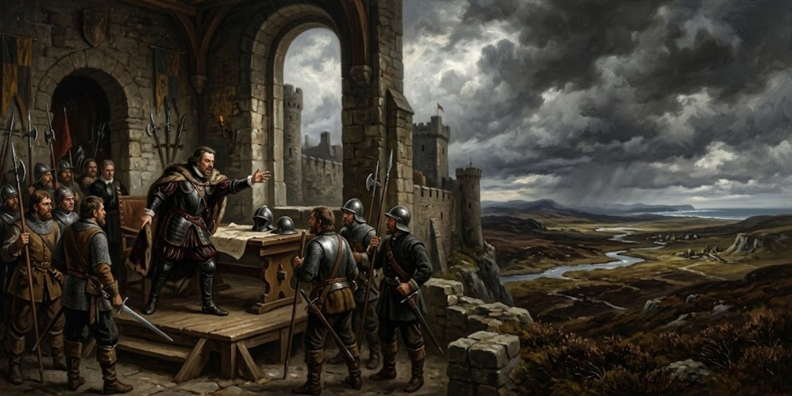
Cornwall no se irá de esa casa sin su venganza, y ya reescribe el caso: no fue solo la mala disposición de Edgar la que buscó la muerte de Gloucester, sino un mérito provocador del propio padre, puesto a andar por una maldad reprobable. Edmund le sigue el juego con una queja perfecta:
How malicious is my fortune that I must repent to be just!
¡Cuán maliciosa es mi fortuna, que debo arrepentirme de ser justo!
Edmund
«Arrepentirme por ser justo»: el cinismo en una línea. Entonces entrega la carta que su padre escondía (lo acredita como «parte inteligente» a favor de Francia), con su «ojalá esta traición no fuera, o no fuera yo su descubridor». Verdadera o falsa, responde Cornwall, te ha hecho conde de Gloucester; busca a tu padre y tenlo listo para la prisión. Edmund promete perseverar en su «lealtad», aunque le duela el choque con su sangre: si halla al viejo consolando al rey, tanto mejor para la sospecha. Y Cornwall le echa el brazo al hombro con el precio entero de la traición: «deposito mi confianza en ti, y hallarás en mi amor un padre más querido».
Acto III, escena 6
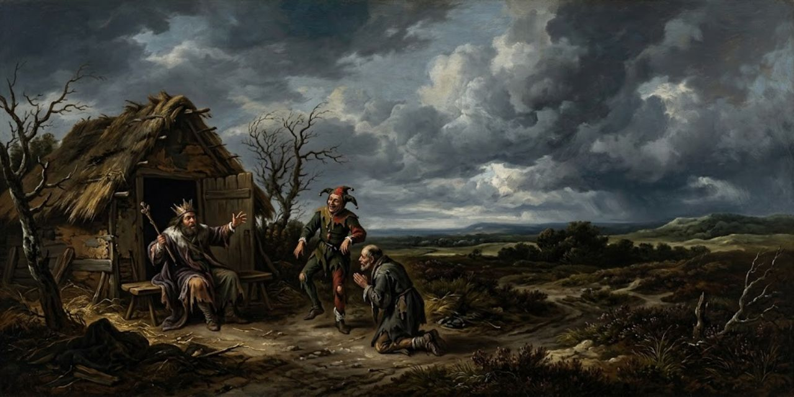
Bajo techo al fin. Todo el poder de los sesos del rey ha cedido a su impaciencia, dice Kent. Tom oye a su demonio Frateretto: Nerón pesca en el lago de la oscuridad. El Bufón le pregunta a Lear si un loco es un caballero o un villano. «Un rey, un rey». No: es villano el que tiene un caballero por hijo, porque loco está el villano que ve a su hijo caballero delante de él. Y el Bufón deja caer su sabiduría de la casa:
He’s mad that trusts in the tameness of a wolf, a horse’s health, a boy’s love, or a whore’s oath.
Está loco quien confía en la mansedumbre de un lobo, la salud de un caballo, el amor de un muchacho o el juramento de una puta.
Bufón
Loco el que confía en la mansedumbre del lobo, en la salud de un caballo, en el amor de un muchacho o en el juramento de una ramera. Lear, de pronto, ordena: se hará; las voy a procesar ahora mismo. Tomen asiento, doctísimo juez, señor sapiente: el tribunal son Tom y el Bufón, y las reos, dos taburetes. «Procesen primero a Goneril: juro ante esta honorable asamblea que pateó al pobre rey su padre». El Bufón cita a la primera reo:
Come hither, mistress.
Ven aquí, señora.
Bufón
«¿Es vuestro nombre Goneril?». «No puede negarlo», asiente Lear. «Perdone: la tomé por un taburete». A la otra hay que pararla: «¡deténganla! ¡Armas, espada, fuego! ¡Corrupción en el tribunal! ¿Por qué la dejó escapar, falso juez?». Kent lo mira con piedad: «¿dónde está ahora la paciencia que tantas veces se jactó de guardar?». A Edgar se le saltan las lágrimas y le estropean la actuación. Lear ve perritos que le ladran (Tray, Blanch y Sweetheart, todos) y pide la autopsia que nadie puede hacer: «que anatomícen a Regan, a ver qué se cría alrededor de ese corazón; ¿hay en la naturaleza causa que haga estos corazones duros?». Y al desnudo lo nombra de su cien: «usted, señor, lo tomo por uno de mis cien; solo que no me gusta la moda de sus prendas; dirá que son persas, pero que se las cambien».
Al fin el sueño: «no hagan ruido, no hagan ruido; corran las cortinas; así, así; iremos a cenar por la mañana». «Y yo iré a acostarme al mediodía», responde el Bufón, y es su última copla en la obra. Gloucester vuelve con la alarma: ha oído una trama de muerte contra el rey; hay una litera lista; a Dover, donde hallarán bienvenida y protección; si se demoran media hora, su vida, y la de todos los que lo defiendan, está perdida. Gloucester pregunta dónde está el rey su señor, y Kent señala al que duerme:
Here, sir, but trouble him not; his wits are gone.
Aquí, señor, pero no lo turbéis; sus sesos se han ido.
Kent
Lo toman en brazos («la naturaleza oprimida duerme; este descanso aún podría haber curado tus nervios rotos») y lo suben a la litera. Al quedarse solo, Edgar hace la cuenta de la escena: cuando vemos a nuestros superiores cargar nuestras desgracias, apenas creemos que las miserias sean enemigas nuestras; qué liviano y portable es mi dolor ahora que lo que me dobla a mí dobla al rey: «él con hijos como yo con padre». Y se va: «Tom, afuera; atento a los ruidos altos; lo que pase más esta noche, que el rey se escape a salvo. Agazápate, agazápate».
Acto III, escena 7

En la casa de Gloucester, Cornwall despacha: carta veloz a Albany («el ejército de Francia ha desembarcado»), Edmund acompaña a Goneril, y del padre traidor se encarga él. «Que lo cuelguen en el acto», dice Regan. «Que le saquen los ojos», dice Goneril. Traen a Gloucester atado como a un ladrón, en su propia casa, y él apela a la ley más vieja:
Good my friends, consider You are my guests; do me no foul play, friends.
Mis buenos amigos, considerad: sois mis huéspedes; no me hagáis juego sucio, amigos.
Gloucester
Son sus huéspedes, les recuerda; es su anfitrión. Cornwall lo manda atar a la silla; Regan le arranca los pelos de la barba («tan blanca, y tal traidor»). «Esos pelos que me arrancas del mentón cobrarán vida y te acusarán», responde el viejo. Las preguntas van a la carta y al rey: ¿dónde lo has mandado? A Dover. ¿Por qué a Dover? Gloucester, atado, se explica con una imagen de la plaza donde se ceba a los osos:
I am tied to th’ stake, and I must stand the course.
Estoy atado al poste, y debo aguantar el asalto.
Gloucester
Atado al poste, aguanta la carrera: porque no quiso ver las uñas crueles de ella sacar los pobres ojos viejos del rey, ni los colmillos de jabalí de su fiera hermana hundidos en su carne ungida; porque si lobos hubieran aullado a su puerta esa noche tan dura, ella habría dicho «buen portero, dale la vuelta a la llave». «Pero yo veré la venganza alada alcanzar a tales hijas». «Nunca la verás», responde Cornwall, y le pone el pie sobre los ojos. Un criado se interpone («¡detén la mano, mi señor! Te he servido desde niño y nunca te hice mejor servicio que este»); desenvaina; Regan lo atraviesa por la espalda. El criado se muere señalando:
My lord, you have one eye left To see some mischief on him.
Mi señor, os queda un ojo para ver algún daño sobre él.
⌜ First ⌝ Servant
Un ojo le queda para ver el castigo caer. «Que no vea más», dice Cornwall, y saca la otra «vil gelatina». Gloucester, todo oscuro y sin consuelo, llama a su hijo Edmund. Regan se lo da entero: llamas al que te odia; fue él quien nos abrió tus traiciones, y es demasiado bueno para tenerte piedad. «¡Oh, mis locuras! ¡Entonces Edgar fue calumniado! Dioses buenos, perdonádmelo, y prosperadlo». Lo echan por la puerta: «que huela su camino a Dover». Cornwall sale sangrando de la herida del criado. Los criados, solos, hacen el examen de conciencia de la casa:
I’ll never care what wickedness I do If this man come to good.
Nunca me cuidaré de qué maldad haga si este hombre llega a buen fin.
⌜ Second ⌝ Servant
Si ese hombre llega a buen puerto, ya no importa qué maldad se haga; y si ella vive hasta morir de vieja, las mujeres se volverán monstruos. Deciden seguir al viejo conde y buscar al loco de Bedlam para que lo guíe donde quiera («su locura de pícaro se permite todo»); uno va por lino y claras de huevo para la cara sangrante. «Que el cielo lo ayude».
Acto IV, escena 1
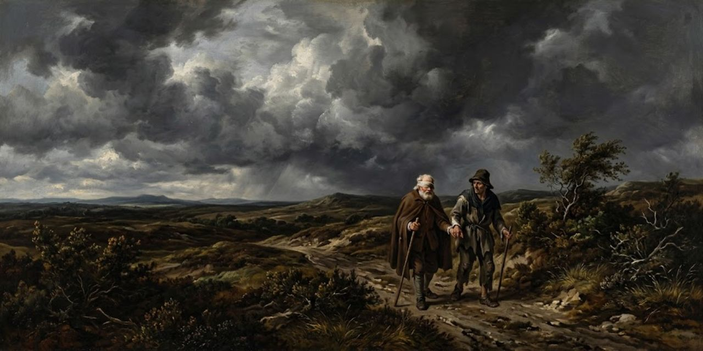
Edgar sigue solo, al aire todavía, y se consuela con la filosofía del fondo: mejor así, conocido por despreciado, que seguir despreciado y adulado; lo peor, lo más bajo y abatido de la Fortuna, permanece en esperanza y no vive en miedo; «el cambio lamentable es desde lo mejor; lo peor vuelve a la risa». Pero entra su padre, ciego, guiado de la mano por un viejo arrendatario de ochenta años, y el consuelo se cae: «mundo, mundo, oh mundo: si tus extrañas mutaciones no nos hicieran odiarte, la vida no cedería a la edad».
Gloucester despide al viejo (tus consuelos no pueden hacerme ningún bien; a ti pueden hacerte daño) y suelta la sabiduría que le costó los ojos: «no tengo camino, y por eso no necesito ojos; tropecé cuando veía». Y confiesa en voz alta lo que no sabe que su hijo está oyendo:
O dear son Edgar, The food of thy abusèd father’s wrath, Might I but live to see thee in my touch, I’d say I had eyes again.
¡Oh querido hijo Edgar, alimento de la ira de tu padre engañado! Si pudiera vivir para verte con mi tacto, diría que tengo ojos otra vez.
Gloucester
«Oh, hijo querido Edgar»: si pudiera vivir para verlo con el tacto, diría que ha vuelto a tener ojos. Edgar, aparte, hace el segundo descubrimiento de la escena: ¿quién puede decir «estoy en lo peor»? Lo peor no es mientras podamos decir «esto es lo peor». El viejo le presenta al loco mendigo; Gloucester recuerda al desnudo de la tormenta («me hizo pensar que el hombre es un gusano») y dicta la sentencia de la obra: «como las moscas para los muchachos traviesos somos para los dioses: nos matan por su deporte». Manda al viejo por ropa para «esta alma desnuda» («es la plaga del tiempo: que los locos guíen a los ciegos»), y el viejo se va prometiendo traer lo mejor que tenga, pase lo que pase.
Edgar no puede más con el oficio («mal oficio, hacer de bufón del dolor»), y al ver de cerca las cuencas de su padre se le escapa la bendición:
—Bless thy sweet eyes, they bleed.
—Benditos sean tus dulces ojos, sangran.
Edgar
Bendice los ojos dulces que sangran. Gloucester le da su bolso («que yo sea desgraciado te hace a ti más feliz») y redistribuye el mundo: que el hombre superfluo y cebado en lujuria, que no ve porque no siente, sienta pronto el poder de los cielos; «así la distribución desharía el exceso, y cada hombre tendría bastante». Y pide lo único que quiere: en Dover hay un acantilado cuya cabeza alta y doblada mira con miedo al mar encerrado; que lo lleve al borde mismo, que desde ese lugar no necesitará guía. Edgar le ofrece el brazo:
Give me thy arm.
Dame el brazo.
Edgar
«Pobre Tom te guiará»: el hijo que él maldijo lleva al padre que lo busca, y el padre no lo sabe.
Acto IV, escena 2

Ante el palacio de Albany. Goneril llega con Edmund y con Oswald, que cuenta al duque cambiado: sonrió al oír del ejército desembarcado; «peor», dijo al saber que ella venía. Goneril lo diagnostica: terror gallina de su espíritu, que no se atreve a emprender. Despide a Edmund hacia Cornwall: que apure las levas de su hermano; ella cambiará nombres en casa y dará la rueca a su marido. Le cuelga un favor al cuello («lleva esto; ahorra palabras; inclina la cabeza») y le da el beso de despedida: «este beso, si se atreviera a hablar, te estiraría los espíritus hasta el aire; concibe, y que te vaya bien». Edmund responde: «tuyo en las filas de la muerte». Sola, Goneril hace la cuenta:
To thee a woman’s services are due; My fool usurps my body.
A ti se deben los servicios de una mujer; mi bufón usurpa mi cuerpo.
Goneril
«Oh, la diferencia de hombre a hombre: a ti se te deben los servicios de una mujer; mi necio usurpa mi cuerpo». Llega Albany, y el marido suave ya no existe: «no vales el polvo que el viento grosero te sopla a la cara»; la que se desgaja de la savia de su origen tiene que marchitarse y venir a uso mortal. «Basta; el texto es necio». «La sabiduría y la bondad parecen viles a los viles. Tigres, no hijas: ¿qué habéis hecho? Un padre, un anciano venerable al que hasta el oso enarbolado lamería, lo habéis enloquecido. Si los cielos no mandan pronto sus espíritus visibles a domeñar estos crímenes, vendrá: la humanidad tendrá que depredarse a sí misma, como monstruos del abismo». Goneril se ríe: «hombre de hígado de leche, que aguanta mejillas para golpes y cabeza para agravios; ¿dónde está tu tambor? Francia despliega sus banderas y tú, necio moral, lloriqueas». Albany se levanta sobre ella («mírate, demonio; la deformidad no se muestra tan horrenda en el diablo como en la mujer») y llega al borde:
Howe’er thou art a fiend, A woman’s shape doth shield thee.
Por más demonio que seas, la forma de mujer te escuda.
Albany
La forma de mujer lo protege; si obedeciera a su sangre, sus manos le dislocarían la carne. «Vaya, la hombría de usted, miau», empieza ella, y la corta la noticia: Cornwall ha muerto, muerto por su propio criado al sacarle el otro ojo a Gloucester. Albany levanta los ojos: «esto muestra que estáis ahí arriba, justicieros, que tan pronto vengáis nuestros crímenes de aquí abajo. Pero, oh pobre Gloucester, ¿perdió el otro ojo?»:
Both, both, my lord.
Ambos, ambos, mi señor.
Mensajero
Los dos, los dos. Y la carta de Regan pide respuesta pronta: Goneril, aparte, calcula (viuda y con «mi Gloucester» a su lado, puede derrumbar todo el edificio de mi fantasía). Albany pregunta dónde estaba el hijo de Gloucester cuando le sacaban los ojos: fue él quien lo denunció y dejó la casa libre para el castigo. Albany cierra con el juramento de su segunda vida: «Gloucester, vivo para agradecerte el amor que mostraste al rey, y para vengar tus ojos». Y se lleva al mensajero: «dime qué más sabes».
Acto IV, escena 3
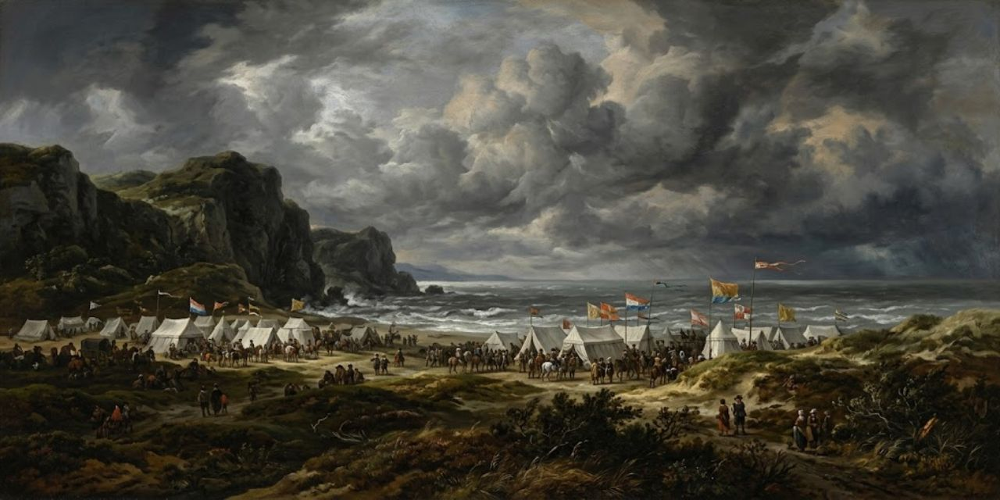
En el campamento francés, cerca de Dover. Kent pregunta por qué el rey de Francia volvió tan de repente: dejó algo imperfecto en el estado que exigía su regreso en persona; queda el mariscal La Far por general. ¿Y las cartas? ¿Traspasaron a la reina hasta una muestra de dolor? El caballero lo cuenta como quien describe un cuadro: las tomó, las leyó en su presencia, y de cuando en cuando una lágrima amplia rodaba por su mejilla delicada; parecía una reina sobre su pasión, que, muy rebelde, peleaba por ser rey sobre ella. «¿Entonces la conmovió?». No hasta la furia: paciencia y dolor competían por cuál la expresaba más hermosa; «habéis visto sol y lluvia a la vez: sus sonrisas y sus lágrimas eran como un camino mejor»; aquellas sonrisillas felices que jugaban en su labio maduro no sabían qué huéspedes tenían sus ojos, que partían de allí como perlas caídas de diamantes.
¿Y no hizo pregunta verbal? Una o dos veces dejó escapar el nombre de «padre», jadeante, como si le apretara el corazón: «hermanas, hermanas, vergüenza de las damas, hermanas; ¡en la tormenta, en la noche!»:
Let pity not be believed!
¡Que la piedad no sea creída!
Caballero
«Que no se crea la piedad»: allí sacudió el agua santa de sus ojos celestiales, y se fue a tratar con el dolor a solas. Kent lo explica con las estrellas: «las estrellas sobre nosotros gobiernan nuestras condiciones; si no, un mismo padre no podría engendrar vástagos tan distintos». ¿Y el rey? Está en el pueblo, el pobre Lear afligido; a ratos, en su mejor tono, recuerda a qué hemos venido, y de ningún modo consentirá ver a su hija. ¿Por qué? Una vergüenza soberana le pone el codo: su propia crueldad (quitarla de su bendición, dar sus derechos caros a sus hijas de corazón de perro) le pica la mente tan venenosamente que una vergüenza ardiente lo detiene lejos de Cordelia. «Ay, pobre señor». Kent se despide: lo llevará donde su amo Lear, pero una causa querida lo envolverá en ocultamiento un tiempo:
When I am known aright, you shall not grieve Lending me this acquaintance.
Cuando sea conocido rectamente, no os dolerá haberme prestado este trato.
Kent
«Cuando se me conozca como es debido, no os dolerá haberme prestado este conocimiento». Y se van juntos: «os ruego, venid conmigo».
Acto IV, escena 4
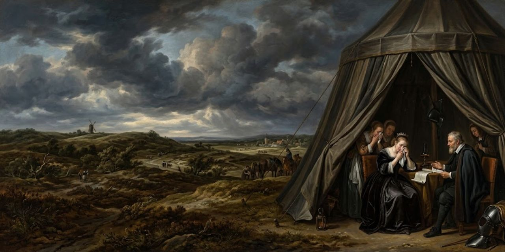
En el campamento francés. Cordelia acaba de oírlo: «ay, es él»: lo encontraron hace un momento loco como el mar airado, cantando en voz alta, coronado de fumaria y hierbas de surco, de bardanas, cicuta, ortigas y flores de cuco, cizaña y todas las hierbas ociosas que crecen en nuestro trigo sustentador. Que salga una centuria; que busquen cada acre del campo alto y lo traigan a su vista. ¿Qué puede la sabiduría del hombre para restaurar su sentido despojado? «Quien lo ayude, que se lleve todo mi valor exterior». El médico responde que hay medios: nuestra nodriza de la naturaleza es el reposo, que él no tiene, y hay simples operativos cuyo poder cerrará el ojo de la angustia. Cordelia reza a la tierra («todos los secretos benditos, todas las virtudes no publicadas de la tierra, broten con mis lágrimas; séanse ayuda y remedio en la aflicción del buen hombre») y apura la búsqueda:
Seek, seek for him, Lest his ungoverned rage dissolve the life That wants the means to lead it.
Buscadlo, buscadlo, no sea que su rabia ingobernable disuelva la vida que carece de medios para guiarla.
Cordelia
Que no lo encuentre antes la rabia sin gobierno y disuelva la vida que carece de medios para conducirse. Llega la noticia: las fuerzas británicas marchan hacia aquí. «Ya se sabía; nuestra preparación las espera». Y Cordelia declara la guerra que hace: «oh padre querido, de tu negocio voy; por eso el gran Francia tuvo piedad de mi luto y mis lágrimas importunas; ninguna ambición hinchada incita nuestras armas, sino el amor, el amor querido, y el derecho de nuestro viejo padre. Pronto pueda yo oírlo y verlo».
Acto IV, escena 5

En el campamento británico. Regan interroga a Oswald, el mayordomo de su hermana, que lleva una carta de Goneril para Edmund. ¿Las fuerzas de Albany ya salieron? Sí, señora, y él en persona, aunque a mucha costa: «vuestra hermana es la mejor soldada». Regan hace la lógica del poder en voz alta: «fue una gran ignorancia, sacados los ojos de Gloucester, dejarlo vivir; donde llega, mueve todos los corazones contra nosotras». Edmund, cree, ha ido a despachar por piedad la vida nocturna del ciego y a ojear la fuerza del enemigo. Y entonces va a lo que le duele: ¿por qué le escribe mi hermana a Edmund?
Might not you Transport her purposes by word?
¿No podrías tú transportar sus propósitos de palabra?
Regan
«¿No podríais transportar sus propósitos de palabra?». Como Oswald no cede («mi señora me encargó mi deber en este negocio»), Regan prueba con todo: «te amaré mucho; déjame abrir la carta». «Señora, preferiría...». Regan lo sabe todo y lo dice: su señora no ama a su marido; en su última visita le lanzó a Edmund extraños guiños y miradas muy locuaces; «sé que sois de su pecho». «¿Yo, señora?». «Hablo entendiendo; lo sois, lo sé». Y le deja la nota que debe llevar: mi señor ha muerto; Edmund y yo hemos hablado, y le conviene más mi mano que la de vuestra señora; «ya podéis deducir más». Y si oye hablar del traidor ciego: «el ascenso cae sobre quien lo quite de en medio». Oswald, solo, se vende: «ojalá me lo encontrara, señora; mostraría qué partido sigo». «Que te vaya bien».
Acto IV, escena 6

En el campo abierto, camino de Dover. «¿Cuándo llegaré a lo alto de esa colina?», pregunta Gloucester. Edgar ha cambiado de voz y de traje, y guía a su padre por un llano que él nombra precipicio («horriblemente empinado; ¿oyes el mar?»). Gloucester nota que la voz de su guía se ha refinado; «estáis muy engañado: en nada he cambiado sino en las prendas», miente el hijo. «Venga, señor: aquí es el lugar. Quédese quieto». Y Edgar pinta el vértigo para el que no puede verlo:
How fearful And dizzy ’tis to cast one’s eyes so low!
¡Qué espantoso y vertiginoso es echar los ojos tan abajo!
Edgar
Qué miedo y qué mareo echar los ojos tan abajo: los cuervos que cruzan el aire a media altura apenas parecen tan grandes como escarabajos; a mitad de la caída cuelga uno que recoge hinojo marino, oficio terrible («no parece más grande que su cabeza»); los pescadores que andan por la playa parecen ratones, y la gran barca anclada se ha encogido hasta su bote, y el bote hasta una boya casi demasiado pequeña para la vista; el murmullo de la resaca no puede oírse tan alto. «No miraré más, no se me vuelva el seso y la vista deficiente me tumbe de cabeza». Lo pone a un pie del borde extremo y se retira: Gloucester le deja otro bolso con una joya («que las hadas y los dioses te la prosperen»), pide oírlo alejarse, y se despide del mundo: renuncia a este mundo y sacude con paciencia su gran aflicción; si pudiera aguantarla más sin pelear con las voluntades de los dioses, su parte detestada de la naturaleza se consumiría sola. «Si Edgar vive, ¡oh, bendícelo! Ahora, mozo, que te vaya bien». Y se arroja, y cae en el llano.
Edgar no sabe si la imaginación puede robar la tesorería de la vida cuando la vida misma se rinde al robo; pero el viejo revive. Lo levanta con la mentira piadosa: cayó de la cumbre espantosa de este lindero calcáreo; diez mástiles puestos uno sobre otro no hacen la altura que ha caído en perpendicular; «tu vida es un milagro». «¿Pero he caído o no?». «Mira hacia arriba». «Ay, no tengo ojos: ¿está la miseria tan privada de beneficio que no puede acabarse por la muerte?». En la cima, le inventa Edgar, había una cosa de ojos como dos lunas llenas y mil narices, con cuernos ondulados como el mar airado: algún demonio. «Los dioses más claros, que se hacen honores de las imposibilidades de los hombres, te han guardado». Gloucester lo acepta:
Henceforth I’ll bear Affliction till it do cry out itself “Enough, enough!
De aquí en adelante soportaré la aflicción hasta que ella misma grite «¡Basta, basta!
Gloucester
De ahora en adelante cargará con la aflicción hasta que ella misma grite «basta, basta» y muera. ¿Pero quién viene así? Un loco coronado de hierbas, que no lo pueden tocar por acuñar moneda («yo soy el rey mismo»), que reparte dinero de recluta, mata ratones con queso tostado y reta a gigantes. Gloucester reconoce la voz: «¿no es el rey?». Lear, cada pulgada un rey, dicta su doctrina: indulta al adúltero («¿morir por adulterio? No: el pequeño pez dorado fornica ante mis ojos; que prospere la cópula, que me faltan soldados»), porque el hijo bastardo de Gloucester fue más amable con su padre que sus hijas concebidas entre sábanas legales. Gloucester quiere besarle la mano. «Deja que me la limpie primero: huele a mortalidad». «¡Oh, pieza arruinada de la natura!». «¿Me conoces?». «Recuerdo bastante bien tus ojos». Lear le manda leer el desafío con las cuencas vacías: «¿sin ojos en la cabeza ni dinero en la bolsa? Vuestros ojos están en estuche pesado y vuestra bolsa en ligero; sin embargo, ves cómo va este mundo». «Lo veo con el tacto».
Y Lear predica: un hombre puede ver cómo va este mundo sin ojos; mira con las orejas: ese juez riñe a ese ladrón simple; cámbialos de lugar y, a la suerte, ¿cuál es el juez y cuál el ladrón? ¿Has visto al perro de un labrador ladrar a un mendigo, y a la criatura correr del chucho? Ahí puedes contemplar la gran imagen de la autoridad: se obedece a un perro cuando está en el cargo. Alguacil bribón, detén tu mano sangrienta: ¿por qué azotas a esa ramera? Desnuda tu propia espalda. El usurero cuelga al embaucador; por los harapos asoman los vicios pequeños; las togas y las pellicas lo esconden todo; chapa el pecado en oro y la fuerte lanza de la justicia se rompe sin dañarlo. «Consíguete ojos de vidrio y, como un ruin político, parece ver las cosas que no ves». Edgar lo resume aparte: «materia y desatino mezclados: ¡razón en la locura!». Y entonces Lear lo reconoce:
If thou wilt weep my fortunes, take my eyes.
Si quieres llorar mis fortunas, toma mis ojos.
Lear
«Si quieres llorar mis fortunas, toma mis ojos: te conozco bastante bien; te llamas Gloucester. Tienes que ser paciente: venimos llorando aquí; la primera vez que olemos el aire, berreamos y lloramos. Cuando nacemos, lloramos de haber venido a este gran escenario de necios». Y de pronto trama: herrar con fieltro una tropa de caballo, caer por sorpresa sobre estos yernos, y «matar, matar, matar, matar, matar, matar». Llegan los criados de Cordelia: «denle mano; señor, vuestra queridísima hija...». «¿Sin rescate? ¿Prisionero? Soy el necio natural de la Fortuna. Trátenme bien; habrá rescate; tráiganme cirujanos: estoy cortado hasta los sesos». Se niega a llorar (eso haría de un hombre un hombre de sal), jura morir bravo como un novio acicalado, y sale corriendo: «soy un rey, amos, ¿lo saben? Si lo quieren, lo ganarán corriendo». El caballero lo mira irse:
A sight most pitiful in the meanest wretch, Past speaking of in a king.
Un espectáculo dignísimo de lástima en el más ruin de los miserables; indecible en un rey.
Caballero
Vista dignísima de lástima en el más ruin de los hombres; indescriptible en un rey. Y añade la buena noticia: tiene una hija que redime a la naturaleza de la maldición general a que la trajeron las otras dos. Edgar pregunta por la batalla: ciertísima y en boca de todos; el otro ejército está cerca y a pie veloz. Gloucester ora («dioses siempre gentiles, quitadme el aliento; que mi peor espíritu no me tiente otra vez a morir antes de que os plazca»), y Edgar se presenta como un pobre hombre hecho manso a los golpes de la Fortuna, preñado de buena piedad por el arte de los dolores conocidos y sentidos.
Entonces aparece Oswald, con la carta y el precio: «¡premio proclamado! Esa cabeza sin ojos tuya fue hecha carne para levantar mi fortuna; la espada está fuera». Edgar se interpone con acento de campesino: «no lo suelto, zir, sin más ocasión»:
Nay, come not near th’ old man.
No, no te acerques al viejo.
Edgar
Que no se acerque al viejo: probará si el coco de Oswald o su palo es el más duro. Dos golpes, y Oswald cae: «esclavo, me has matado; toma mi bolsa; si quieres prosperar, entierra mi cuerpo, y dale las cartas que encuentres sobre mí a Edmund, conde de Gloucester». Y muere de «muerte intempestiva». Edgar lo despide:
I know thee well, a serviceable villain, As duteous to the vices of thy mistress As badness would desire.
Te conozco bien: un villano servicial, tan obediente a los vicios de tu señora como la maldad desearía.
Edgar
Lo conoce bien: villano servicial, tan obediente a los vicios de su señora como la maldad podría desear. Registra los bolsillos («para conocer las mentes de nuestros enemigos les abrimos los corazones; sus papeles son más legales») y lee la carta de Goneril: recuerda nuestros votos recíprocos; tendrás muchas ocasiones de quitarlo de en medio; si vuelve vencedor, yo soy la prisionera y su cama mi cárcel; «de la calidez aborrecida de ella, líbrame, y ocupa el lugar». Firmado: «tu esposa (eso quisiera decir), afectuosa servidora, Goneril». «¡Oh espacio indistinguible de la voluntad de la mujer!». Enterrará en la arena a ese poste insaciable de lechosos asesinos, y a su tiempo golpeará con ese papel la vista del duque sentenciado a muerte. Gloucester, oyendo el tambor batido a lo lejos, envidia la locura del rey: mejor estar distraído; así mis pensamientos se separarían de mis penas, y los dolores perderían el conocimiento de sí mismos. Edgar le da la mano: «ven, padre; te acomodaré con un amigo».
Acto IV, escena 7

En una tienda del campamento francés. Cordelia agradece a Kent: «oh, buen Kent, ¿cómo viviré y trabajaré para igualar tu bondad? Mi vida será demasiado corta, y toda medida me faltará». Ser reconocido ya es sobrepago, responde él, y pide seguir sin nombre: «que no me conozcáis hasta que el tiempo y yo lo juzguemos conveniente». «Así sea, mi buen señor. ¿Cómo está el rey?». Duerme todavía. Y Cordelia ora:
O, you kind gods, Cure this great breach in his abusèd nature!
¡Oh, dioses bondadosos, curad esta gran brecha en su abusada naturaleza!
Cordelia
«Dioses buenos, curad esta gran brecha en su natura abusada; los sentidos desafinados y discordes, oh, templadlos, de este padre cambiado por hijas». El médico manda subir la música; Cordelia besa al durmiente: «que la restauración cuelgue su medicina de mis labios, y que este beso repare los daños violentos que mis dos hermanas han hecho en tu reverencia». ¿Era esta una cara para oponer a los vientos discordes, para velar, pobre centinela perdido, con ese casco delgado? «El perro de mi enemigo, aunque me hubiera mordido, habría pasado esa noche junto a mi fuego». El rey despierta despacio: «me hacéis un agravio al sacarme de la tumba; tú eres un alma en la bienaventuranza, pero yo estoy atado a una rueda de fuego, y mis propias lágrimas escaldan como plomo fundido». «¿Me conocéis, señor?». «Sois un espíritu, lo sé. ¿Dónde moriste?». Poco a poco vuelve en sí:
I am mightily abused; I should e’en die with pity To see another thus.
Estoy poderosamente confundido; hasta moriría de piedad por ver a otro así.
Lear
Está muy confundido; moriría de piedad de ver a otro así. No juraría que esas sean sus manos; prueba un alfiler; querría estar seguro de su condición. Cordelia le pide la bendición; él quiere arrodillarse ante ella («no, señor, no debéis arrodillaros»). «No se burlen: soy un viejo muy necio y muy tierno, ochenta años y más, ni una hora más ni menos, y, para hablar claro, temo no estar en mi perfecto juicio». Cree que debería conocerla, y a este hombre; no recuerda estas ropas ni dónde durmió anoche. «No se rían de mí: pues soy hombre, creo que esta dama es mi hija Cordelia». «Y así soy; soy». «¿Están mojadas tus lágrimas? Sí, por fe. Si tienes veneno para mí, lo beberé: sé que no me amas, pues tus hermanas, según recuerdo, me hicieron mal; tú tienes alguna causa; ellas, ninguna». «Ninguna causa, ninguna causa». «¿Estoy en Francia?». «En vuestro propio reino, señor». El médico frena: la gran rabia ha muerto en él, pero hay peligro en hacerle repasar el tiempo perdido. Lear se deja llevar: «tendréis que tenerme paciencia. Ahora, os ruego, olvidad y perdonad. Soy viejo y necio».
Kent se queda con el caballero: ¿es cierto que el duque de Cornwall murió así? Ciertísimo. ¿Quién conduce su gente? El hijo bastardo de Gloucester, según se dice; y dicen que Edgar, el hijo desterrado, está con el conde de Kent en Alemania («la fama es mudable»). Las fuerzas del reino se acercan a toda prisa; el arbitraje será sangriento. «Id con Dios». Y Kent cierra el acto mirando la batalla que viene:
My point and period will be throughly wrought, Or well, or ill, as this day’s battle’s fought.
Mi punto y mi fin serán cumplidos del todo, bien o mal, según se libre la batalla de este día.
Kent
Acto V, escena 1
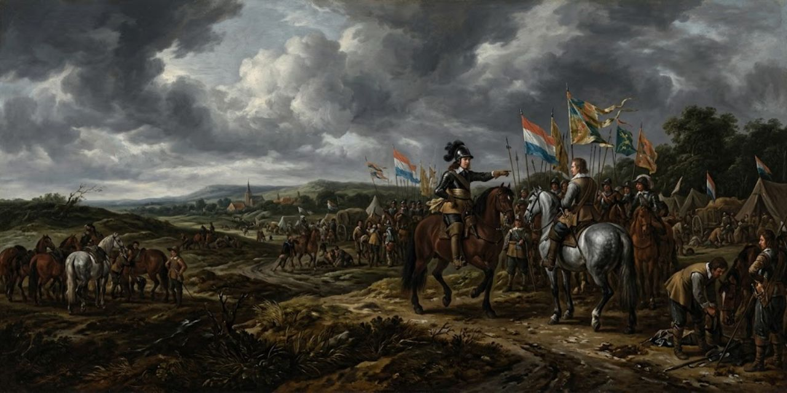
En el campamento británico, cerca de Dover. Edmund despacha a un oficial: que le pregunten al duque si su último propósito se mantiene o si algo lo ha aconsejado a cambiar de curso («está lleno de alteración y de reprenderse a sí mismo»). Regan tiene su propio parte: el hombre de nuestra hermana se ha perdido por el camino. Y luego va a lo suyo: «ahora, dulce señor: conoces la bondad que te destino; dime con verdad: ¿no amas a mi hermana?». «Con amor honrado». «¿Nunca hallaste el camino de mi hermano al lugar vedado?». «Ese pensamiento os injuria». Ella no se queda tranquila, y lo pide llano:
Dear my lord, Be not familiar with her.
Mi querido señor, no seáis familiar con ella.
Regan
«No la soportaré nunca: querido señor, no seas familiar con ella». «No temáis». Goneril, que llega con Albany, lo piensa aparte: «prefiero perder la batalla a que esa hermana nos suelte a él y a mí». Albany expone su caso con nobleza incómoda: pelea porque Francia invade su tierra, no porque enarbole al rey, del que le pesan las causas justas y graves. «Hablas noblemente», dice Edmund. «¿Por qué se razona esto?», corta Regan; y Goneril: uníos contra el enemigo, que estos pleitos domésticos y particulares no son la cuestión. Regan quiere a Goneril lejos de Edmund («¿vienes con nosotros?». «No». «Es lo más conveniente; os lo ruego». «Oho, ya entiendo la adivinanza: iré»).
Un caballero encapuchado detiene a Albany: si alguna vez su gracia habló con hombre tan pobre, que lo oiga una palabra. Es Edgar, sin nombre todavía: «antes de pelear la batalla, abra esta carta; si tiene victoria, que la trompeta llame al que la trajo; por miserable que parezca, puedo producir un campeón que probará lo que ahí se asevera». Albany quiere retenerlo mientras lee; no puede:
When time shall serve, let but the herald cry And I’ll appear again.
Cuando el tiempo sirva, que solo grite el heraldo y apareceré de nuevo.
Edgar
«Cuando el tiempo sirva, que el heraldo grite, y yo apareceré de nuevo». Edmund vuelve con el parte del enemigo («saquen sus fuerzas; aquí está el cálculo de su verdadera potencia, por diligente descubrimiento»), y, solo, hace su inventario: a ambas hermanas les ha jurado amor, celosa cada una de la otra como los picados de la víbora; ¿cuál tomar? ¿Ambas? ¿Una? ¿Ninguna? Ninguna puede gozarse si ambas quedan vivas; tomar a la viuda enfurece y enloquece a Goneril, y con su marido vivo difícilmente sacará adelante su bando. Y decide el uso de todos:
Now, then, we’ll use His countenance for the battle, which, being done, Let her who would be rid of him devise His speedy taking off.
Ahora, pues, usaremos su apoyo para la batalla, la cual, una vez hecha, que la que quiera librarse de él maquine su pronta eliminación.
Edmund
«Usaremos su rostro para la batalla; hecha esta, que la que querría librarse de él trame su pronta muerte». En cuanto a la misericordia que Albany piensa tener con Lear y con Cordelia: terminada la batalla y teniéndolos en su poder, nunca verán su perdón, «porque mi estado está sobre mí para defenderlo, no para debatirlo».
Acto V, escena 2
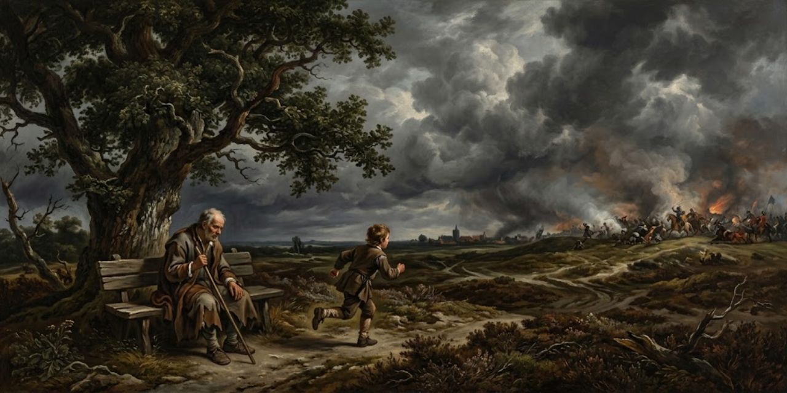
Edgar deja a su padre a la sombra de un árbol («toma la sombra de este árbol por tu buen hospedaje; ruega que el derecho prospere; si vuelvo otra vez, te traeré consuelo»). «La gracia vaya con vos, señor». Vuelve al poco, corriendo, con la batalla perdida: «fuera, viejo»:
Give me thy hand.
Dame la mano.
Edgar
«El rey Lear ha perdido; él y su hija, presos. Vamos». «No más lejos, señor: un hombre puede pudrirse incluso aquí». «¿Otra vez en malos pensamientos? Los hombres deben aguantar su irse de aquí igual que su venir: la madurez es todo. Vamos». «Y eso también es verdad».
Acto V, escena 3
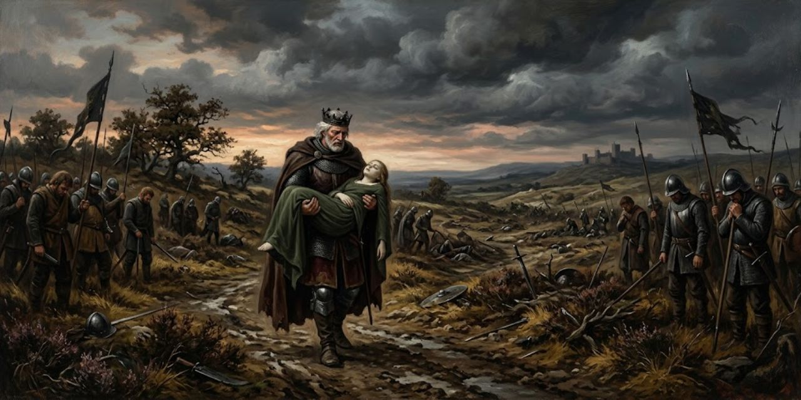
Los prisioneros salen bajo buena guardia, hasta que se conozcan los placeres mayores de quienes han de juzgarlos. Cordelia se consuela en alto: «no somos los primeros que, con la mejor intención, incurren en lo peor; por ti, rey oprimido, estoy abatida; por mí, podría desafiar el ceño de la falsa Fortuna». ¿No veremos a esas hijas, a esas hermanas? «No, no, no, no. Ven, vayámonos a la prisión»: los dos solos cantarán como pájaros en la jaula:
When thou dost ask me blessing, I’ll kneel down And ask of thee forgiveness.
Cuando tú me pidas la bendición, me arrodillaré y te pediré perdón.
Lear
«Cuando tú me pidas la bendición, yo me arrodillaré y te pediré perdón». Así vivirán: rezar, cantar, contar cuentos viejos, reírse de las mariposas doradas, oír a los pícaros hablar de las nuevas de la corte (quién pierde y quién gana, quién está dentro y quién fuera) y tomar sobre sí el misterio de las cosas, como si fueran espías de Dios. «Sobre tales sacrificios, Cordelia mía, los dioses mismos echan incienso. ¿Te tengo? Quien nos separe traerá un tizón del cielo y nos ahumará como a zorros. Enjúgate los ojos: los años buenos los devorarán, carne y pellejo, antes de que nos hagan llorar». Edmund, en voz baja, da al capitán su nota: que los siga a la prisión; los hombres son como el tiempo; el ánimo tierno no le sienta a una espada; que escriba «feliz» cuando lo haya hecho. «No sé tirar de un carro ni comer avena seca, pero si es trabajo de hombre, lo haré».
Albany reclama los prisioneros («usarlos como sus méritos y nuestra seguridad determinen») y le baja los humos a Edmund: «lo tengo por súbdito de esta guerra, no por hermano». Regan se lo disputa («llevó la comisión de mi lugar y mi persona; eso bien puede llamarse hermano suyo») y se lo entrega todo: «toma mis soldados, prisioneros, patrimonio; sea el mundo testigo de que aquí te creo mi señor y mi dueño». «¿Piensas gozarlo?», escupe Goneril. Albany toma la palabra y la cambia por arresto: «Edmund, te arresto por traición capital; y, en tu mácula, a esta serpiente dorada. Por tu demanda, bella hermana, la prohíbo en interés de mi esposa: ella está subcontratada a este lord, y yo, su marido, contradigo vuestras amonestaciones». «¡Un entremés!». Albany tira la prenda: que suene la trompeta; si nadie aparece a probar sobre su persona sus traiciones atroces y manifiestas, él lo hará sobre su corazón antes de probar el pan. Regan se retuerce («enferma, oh, enferma»; Goneril, aparte: «si no, no volveré a fiarme de la medicina»). La trompeta suena tres veces, y al tercer toque entra un caballero armado: «sabed que mi nombre está perdido, roído en limpio por el diente de la traición; pero soy tan noble como el adversario a quien vengo a afrontar». Y reta:
Say thou “no,” This sword, this arm, and my best spirits are bent To prove upon thy heart, whereto I speak, Thou liest.
Di "no": esta espada, este brazo y mis mejores bríos están inclinados a probar sobre tu corazón, a lo cual hablo, que mientes.
Edgar
«Esta espada, este brazo y mis mejores espíritus están dispuestos a probar sobre tu corazón que mientes»: traidor falso a tus dioses, a tu hermano y a tu padre; desde lo más alto de tu cabeza hasta el polvo bajo tu pie, un traidor moteado de sapo. Edmund devuelve el reto («devuelvo estas traiciones a tu cabeza; mi espada les abrirá paso instantáneo, donde reposarán para siempre»), hablan las trompetas, y Edmund cae. Goneril grita ardid («por la ley de la guerra no estabas obligado a responder a un contrario desconocido; no estás vencido: estás embaucado y engañado»), y Albany le tapa la boca con el papel: «tú, peor que cualquier nombre, lee tu propio mal. ¿Conoces este papel?». «No me preguntes lo que sé; las leyes son mías, no tuyas; ¿quién puede procesarme por ello?». Sale, desesperada. Edmund, herido, confiesa: «lo que me has imputado, eso he hecho, y más, mucho más; ha pasado, y yo también. Pero ¿qué eres tú, que tienes esta fortuna sobre mí? Si eres noble, te perdono». Edgar se da a conocer: «intercambiemos caridad: no soy menos en sangre que tú, Edmund; si más, más me has agraviado. Mi nombre es Edgar, hijo de tu padre. Los dioses son justos, y de nuestros vicios placenteros hacen instrumentos para plagarnos: el lugar oscuro y vicioso donde te engendró le costó a él los ojos». «Has dicho la verdad: la rueda ha dado la vuelta entera; estoy aquí».
Albany lo abraza («que el dolor me parta el corazón si alguna vez te odié a ti o a tu padre») y pide la historia. Edgar la cuenta breve: huyendo de la proclama sangrienta («¡oh, dulzura de nuestras vidas, que por el dolor de la muerte morimos a cada hora antes que morir de una vez!») se cambió a harapos de loco, un semblante que los perros mismos desdeñaban; en ese hábito encontró a su padre, con sus anillos sangrantes de piedras recién perdidas; se hizo su guía, mendigó por él, lo salvó de la desesperación, y nunca se le reveló hasta hace media hora, ya armado, cuando le pidió la bendición y le contó la peregrinación de principio a fin: «su corazón defectuoso, demasiado débil para sostener el conflicto entre dos extremos de pasión, gozo y pena, reventó sonriendo». Y mientras él clamaba, llegó un hombre que lo había visto en su peor estado, le echó los brazos fuertes al cuello y bramó como para reventar el cielo, contando el cuento más lastimoso de Lear y de sí mismo que oreja recibió jamás: Kent, el desterrado Kent, que disfrazado siguió a su rey enemigo y le hizo servicios impropios de un esclavo. A Edmund le llega:
This speech of yours hath moved me, And shall perchance do good.
Este vuestro discurso me ha conmovido, y quizá haga bien.
Edmund
«Vuestro discurso me ha movido, y quizá haga bien». Pero no hay tiempo: entra un caballero pidiendo ayuda, con un cuchillo que echa humo («viene del corazón de... ¡oh, está muerta!»): la señora de Albany, y su hermana envenenada junto a ella; lo ha confesado. «Yo estaba contratado con ambas: las tres nos casamos ahora en un instante». Traigan los cuerpos. Llega Kent, viejo y cansado: «vengo a darle a mi rey y señor las buenas noches para siempre». «¡Gran cosa de nosotros olvidada! ¿Dónde está el rey? ¿Y Cordelia?». «Sin embargo, Edmund fue amado», dice el moribundo: una envenenó a la otra por él, y luego se mató. «Cúbranles las caras». Edmund jadea por la vida, y quiere una última cosa:
Some good I mean to do Despite of mine own nature.
Algún bien pretendo hacer a despecho de mi propia naturaleza.
Edmund
«Algún bien quiero hacer, a pesar de mi propia naturaleza»: que corran al castillo, en breve, porque su orden pesa sobre la vida de Lear y de Cordelia; que lleven su espada al capitán como señal de indulto. El encargo era: «tiene comisión de tu mujer y mía para ahorcar a Cordelia en la prisión y echarle la culpa a su propia desesperación». «¡Que los dioses la defiendan! ¡Corred, corred, oh, corred!».
Tarde. Entra Lear con Cordelia en brazos: «¡aúllen, aúllen, aúllen! ¡Oh, son hombres de piedra! Si tuviera vuestras lenguas y vuestros ojos, los usaría de modo que la bóveda del cielo se agrietara. Se fue para siempre. Yo sé cuándo alguien está muerto y cuándo vive: está muerta como la tierra». Pide un espejo («si su aliento empaña o mancha la piedra, entonces vive»), luego una pluma: «esta pluma se mueve: ¡vive! Si es así, es una suerte que redime todas las penas que he sentido jamás». Kent se le acerca («¿es este el fin prometido?»; «¿o imagen de ese horror?», añade Edgar; «cae y acaba», dice Albany), y Lear lo espanta: «quítate. Una peste sobre vosotros, asesinos, traidores todos. Yo la habría salvado. Cordelia, Cordelia, quédate un poco. ¿Qué es lo que dices? Su voz fue siempre suave, gentil y baja, una cosa excelente en una mujer. Maté al esclavo que te estaba ahorcando».
Kent se nombra por fin, y lo hace con una sentencia:
If Fortune brag of two she loved and hated, One of them we behold.
Si la Fortuna se jacta de dos a quienes amó y odió, a uno de ellos lo contemplamos.
Kent
«¿No eres Kent?». «El mismo: tu servidor Kent». «¿Dónde está tu servidor Cayo?». «Ha muerto y se ha pudrido». «No, mi buen señor: soy el mismísimo hombre que desde tu primera diferencia y decadencia ha seguido tus tristes pasos». «Todo sombrío, oscuro y mortal: tus hijas mayores se han quitado la vida». Lear ya no entiende («sí, eso creo»). Un mensajero: Edmund ha muerto. «No es más que una bagatela aquí». Albany empieza a repartir el reino («durante la vida de esta vieja Majestad, le resigno nuestro poder absoluto; todos los amigos probarán el salario de su virtud, y todos los enemigos la copa de sus merecimientos»), y entonces: «¡oh, miren, miren!».
«Y mi pobre bufón está ahorcado. ¿No, no, ninguna vida? ¿Por qué han de tener vida un perro, un caballo, una rata, y tú ningún aliento? No vendrás más: nunca, nunca, nunca, nunca, nunca. Os ruego, desabrochen este botón. Gracias, señor. ¿Ven esto? Mírenla, miren, sus labios: ¡miren allí, miren allí!». Se desmaya, vuelve en sí un instante, y Kent reza por el final:
Vex not his ghost.
No atormentéis su fantasma.
Kent
«No molestéis su espíritu: ¡oh, dejen que pase! Odia al que quisiera estirarlo más tiempo sobre el potro de este mundo duro». «Se ha ido, en verdad». «Maravilla es que haya aguantado tanto: no hacía más que usurpar su vida». Albany reparte: «amigos de mi alma: ustedes dos, gobiernen este reino y sostengan el estado corneado». Kent se despide: «tengo un viaje, señor, que hacer en breve; mi amo me llama; no puedo decir que no». Y Edgar cierra la obra:
The weight of this sad time we must obey, Speak what we feel, not what we ought to say.
El peso de este triste tiempo debemos obedecer, hablar lo que sentimos, no lo que deberíamos decir.
Edgar
«El más viejo ha cargado más; nosotros, los jóvenes, no veremos tanto ni viviremos tanto».
© 2026 Osmancito